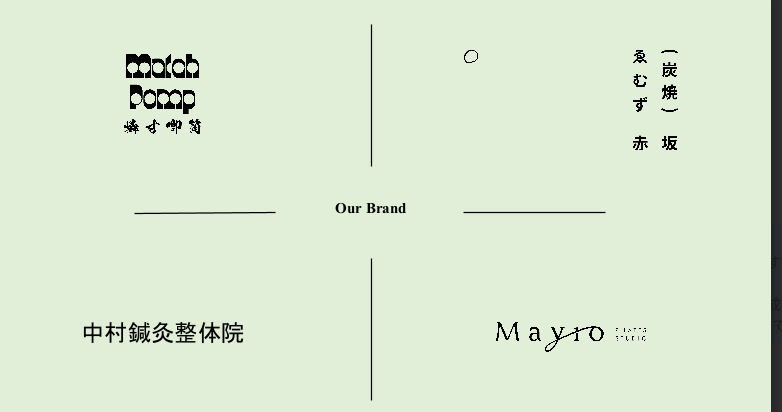

BENEATH THE SURFACE
まだ見ぬ、
その奥へ。
可能性は、深い場所に眠っている。
潜って、見つける ↓01 / DISCOVERY
この光の、奥へ。
MayroRECONT NODEOUR BRANDS / 01

Mayro
次の原石へ ↓RECONT NODEOUR BRANDS / 02
炭焼 × おばんざい
丁度いい店。
ゑむず
次の原石へ ↓RECONT NODEOUR BRANDS / 03
マッチポンプ
次の原石へ ↓RECONT NODEOUR BRANDS / 04
中村鍼灸整体院
次の可能性へ ↓THE NEXT DISCOVERY
新たな原石を
求めて。
Recont Node
もう一度、潜る ↗